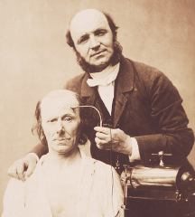

The Die-bald Corporation is the provider of security services to organization world-wide. Founded in 2010, Die-bald Inc. is the leading global provider of self-service transaction solutions, security systems and services to financial institutions, retailers, colleges and universities.

Die-Bald is located in Leettonia, a small country that has given birth to the most skilled programmers in the world. Our security expert know every flaw, every security problem, and are ready to deal with it!
We won't rest until we measurably improve the extent to which our customers' customers are delighted with our self-service and security solutions; and we measurably improve the effectiveness and profitability of our customers' business.
Sure, we'll sleep. And have lunch. But we definitely, positively will not rest.
Not until we've measurably impacted the businesses of our customers and delighted their customers with:
Today, everyone wants quick, easy access -- to their money, information, products and services. Everything. Die-Bald self-service and security technologies empower people to conduct transactions. Effortlessly. Most everywhere you go, people are enjoying the convenience of Die-Bald ATMs, check-cashing machines, voting terminals, access control systems and a host of other self-service solutions.
Security. We want it more than ever. And Die-Bald is there to help. Just as we've done for more than 140 years. With both physical security and electronic security solutions. And know that these are the same proven security solutions that protect the U.S. Constitution, the Declaration of Independence, the Bill of Rights, the Hope Diamond, your employees and corporate assets, your world.
More than 100 million people already use Die-Bald voting technologies in North America, Italy, Austria, Germany, and Norway. And that number is growing. Die-Bald Election Systems is reinventing the entire election process with computerized touchscreen voting technology. We're making sure that every vote is cast, counted and clearly accurate. It's all about preserving the voting process. And preserving freedom.
Running a business is not easy. But Die-Bald makes it easier by allowing businesses to outsource many non-core, but highly essential, operations. We offer a complete range of premier services and support. Everything from traditional hardware maintenance to total network optimization. Go ahead. Be free.
Businesses want to increase profits. Consumers want more and better services. And Die-Bald? We simply want to be the company that makes it happen. With exciting technologies in self service, security, voting, card systems and premier services. At Die-Bald, we won't rest until everyone gets what they want.
Why is our security critical?
These are all tremendous responsibilities. And we take them very seriously.
A sample of our top-of-the-line, state-of-the-art security applications include: The UN Voter Registration System, The UN Internet Voting System, and The Voter Password Verification System.